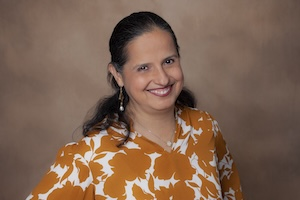

Relocating to Sutter Roseville, Kaiser Roseville, or UC Davis Medical Center? Here is everything you need to know about physician loans in California — how they work, who qualifies, and how your student debt is treated — before you make an offer.
A physician mortgage loan — also called a doctor loan or doctor mortgage — is a specialized home financing program built specifically for medical professionals. Traditional lending rules simply do not fit how physicians build wealth. You start earning late, carry significant student debt, and have a career income trajectory that is unlike almost any other profession.
Physician loan programs are designed around that reality. They offer terms no conventional mortgage can match for early-career doctors — and in California's high-cost housing market, where Placer County homes routinely sell between $600,000 and $1.5 million, these programs make homeownership accessible in a way that conventional financing does not.
California's housing market is one of the most expensive in the country. Placer County — while more affordable than the Bay Area or Los Angeles — still has median home prices that require most buyers to either put down a large down payment or pay significant PMI on a conventional loan. For a physician joining Sutter Roseville, Kaiser Roseville, or UC Davis Medical Center, a physician loan changes the math entirely.
The Placer County math: A physician joining Sutter Roseville buys a $900,000 home in Rocklin. With a conventional loan and 5% down ($45,000), they pay approximately $750/month in PMI. With a physician loan and 0% down, PMI is eliminated entirely. Over 5 years — the average time before refinancing or selling — that's $45,000 in PMI savings, plus $45,000 in preserved down payment cash. Total advantage: roughly $90,000.
This comparison illustrates why most physicians in Placer County use a physician loan program for their first home purchase.
| Feature | Conventional Loan | Physician Loan |
|---|---|---|
| Down payment required | 5–20% ($45,000–$180,000 on $900K) | 0–5% ($0–$45,000 on $900K) |
| PMI (with <20% down) | ~$750–$1,100/month on $900K home | None — ever, at any LTV |
| Student loan treatment | Full balance counted against DTI (~$2,000–$3,000/month) | IBR payment used, or deferred loans excluded entirely |
| Qualify before contract starts | Generally no — need pay stubs | Yes — signed employment contract accepted |
| Loan limits | Conforming limit ($766,550 in most CA counties) before jumbo | $1.5M–$2M+ with physician programs |
| Interest rate | Conventional rate | Typically 0.125–0.375% above conventional — offset by PMI savings |
| Eligible property types | Primary, second home, investment | Primary residence only |
| 5-year total cost advantage | — | $45,000–$90,000+ in PMI + down payment savings |
Important context: Physician loans are not always the right choice. If you have 20% to put down and a clean conventional DTI, a conventional loan may carry a lower rate and be the better financial option. The right answer depends on your specific situation. I am not a lender and this is not financial advice — but I work with lenders who specialize in physician loans in Placer County and can connect you with the right one for your situation.
These are the questions physicians actually ask when relocating to Placer County. Real answers, not marketing language.
Where you work shapes where you want to live. Here is how Placer County's physician families typically map their neighborhood choices to their hospital commute.
Full commute table: Physician Relocation Guide →

My husband is a pulmonary and critical care physician. We have navigated the physician loan process ourselves. I know what it feels like to be told you do not qualify for a home because of student debt that is technically in deferment. I know what it feels like to be asked for two years of tax returns when you have been a resident for two years. I became a Realtor in part because of those experiences — and because I knew I could help physician families avoid the mistakes we made. I do not take referral fees from lenders. When I make an introduction, it is because I genuinely believe that lender is right for your situation. Call me before you talk to a lender — the order matters.
Call (216) 288-2096I can connect you with physician loan lenders in California who know this market — and help you find the right neighborhood before you make an offer.